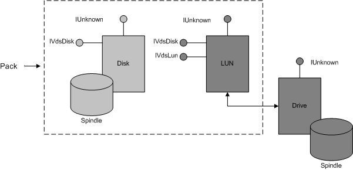

[Beginning with Windows 8 and Windows Server 2012, the Virtual Disk Service COM interface is superseded by the Windows Storage Management API.]
A pack object models a disk group, a collection of disks and volumes managed by the basic or dynamic software provider. A provider can contain multiple pack objects.
Using the API, applications can direct VDS to add one or more disks to a pack, bind the disks into volumes, and optionally move the disks as a unit between hosts. You cannot import an existing volume into a pack.
[!Note]
Membership in a pack does not imply consistency among disks with respect to performance, media, interconnection protocol, or other characteristics.
Â
Disk objects are either unallocated, and managed by VDS, or are members of exactly one pack. The basic software provider can have zero or more packs, each containing a single basic disk. The provider imposes no limits to the number of volumes on a basic disk. The dynamic provider can have zero or more packs with multiple dynamic disks in each pack. This provider limits the number of volumes on a disk, based on the one-megabyte size of the logical disk manager (LDM) database. Given that a volume has at least one plex and one disk extent, the maximum number of volumes to a pack is approximately 1000. The maximum number goes down as the number of disks goes up.
In addition to disk objects, a pack can contain one or more LUN objects implemented by one or more hardware providers. To the Windows kernel, a LUN is just another disk. (LUN objects must be unmasked to the computer that is executing the provider program.) When the disk is a LUN, the LUN object exposes both the IVdsLun and IVdsDisk interfaces. A pack object uses IVdsDisk, instead of IVdsLun, to enumerate the LUNs in a pack. For a more detailed description of a LUN, see the LUN Object.
The following illustration shows a pack with two members: a disk and a LUN. An application can add these objects to an online pack and create a volume from the underlying disk and drive extents represented by spindles.

Use the IVdsSwProvider::CreatePack method to create a new pack object. Callers can get a pointer to a specific pack by selecting the desired pack object from the enumeration that is returned by the IVdsSwProvider:: QueryPacks method. With a pack object, you can add, remove, or replace the members of a pack. When you add a disk object to a pack, VDS initializes a disk to unbind all existing volumes. In contrast, a LUN retains all binding details when it is added to a pack. If you remove the last disk from a pack, VDS deletes the pack object when the caller releases the last reference to the object.
Object properties include an object identifier, a name, pack status, and flags. An online pack is available for configuration and use, an offline pack is unavailable. VDS supports any number of online and offline packs.
Windows Server 2003: Supports only one online pack at a time.
VDS enforces a quorum of online disks within a pack. The quorum determines whether a pack can have an online status, and prevents multiple hosts from granting an online status to the same pack. If the number of online disks in a pack falls below the quorum (n/2 + 1), VDS takes the online pack offline.
The following table lists related interfaces, enumerations, and structures.
| Type | Element |
|---|---|
| Interfaces that are always exposed by this object | IVdsPack and IVdsPack2*. |
| Associated enumerations | VDS_PACK_FLAG and VDS_PACK_STATUS. |
| Associated structures | VDS_PACK_PROP and VDS_PACK_NOTIFICATION. |
Â
*Windows Server 2003: This interface is not supported until Windows Vista.
Â
Â